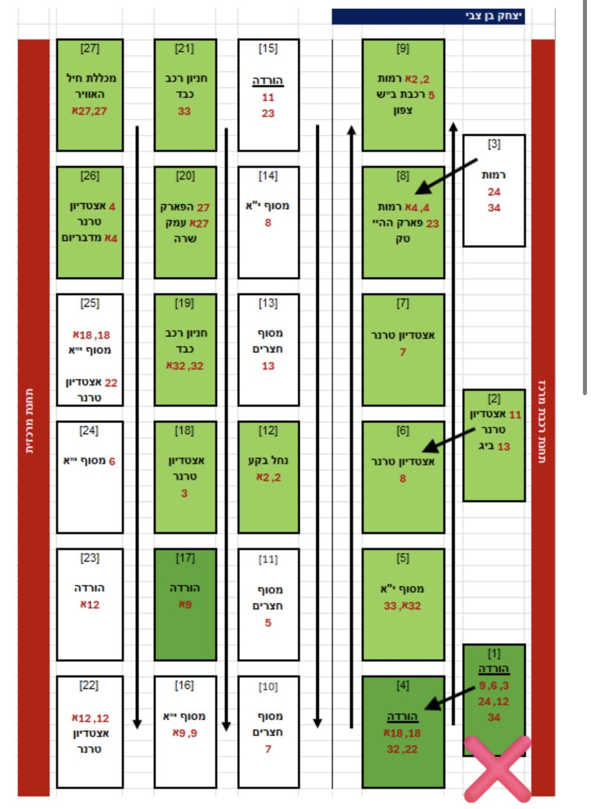
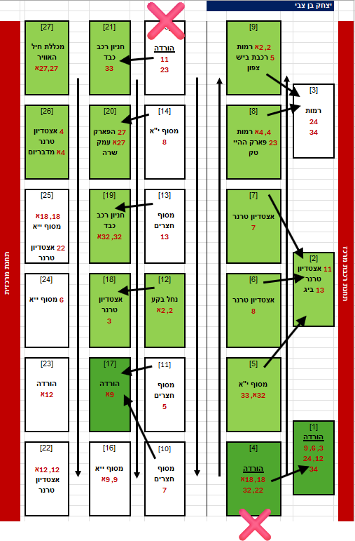

סככה מקורית1
←
סככה חלופית4
הורדה בלבד
מצב העבודות
העבודות יתקיימו בימים שני עד רביעי, 16–18.11.26, בשעות 9:00–17:00.
בעקבות עבודות תשתית במפרצי התחנה המרכזית בב״ש, החל מיום ב׳, 16.11.26, יחול שינוי זמני במיקום התחנות. העבודה תבוצע בשלבים בימים שני עד רביעי, בשעות 9:00–17:00:
בחרו את הקו שלכם כדי לראות איפה לעלות בכל יום, או חפשו לפי סככה ויעד.
הקישו על קו כדי לראות את הסככה החלופית בכל אחד מימי העבודות. אפשר גם לשמור קווים מועדפים במכשיר הזה.
הקווים ששמרתי
כל הקווים שבשינויים
במסך צר אפשר לגלול את התרשים הצידה כדי לראות את כל הסככות, מתחנת מרכזית עד תחנת רכבת מרכז.


ייסגר מפרץ 1 הצמוד לגדר מסילת הרכבת – ויבוטלו זמנית סככות 1, 2, 3
הורדה בלבד
קווים 11 לטרנר, 13 לביג
קווים 24,34 לרמות
מפרץ 1 יפתח ויסגרו לתנועה מפרץ 2/3. יבוטלו זמנית סככות 4 - 14
הורדה
לקווים 33,32א לכוון מסוף י״א
לכוון טרנר
לקווים 4,4א, 23 לרמות
לקווים 2,2א לרמות, 5 לרכבת צפון
לכוון חצרים
קו 2 לנחל בקע
קו 13
קו 8 מסוף י״א
הורדה
אם חיפשתם מספר קו, ייתכן שהוא אינו כלול בשינויים הזמניים ופועל מהסככה הרגילה. אפשר לנסות סככה או יעד אחר, או לבדוק את ההכוונה בשטח.